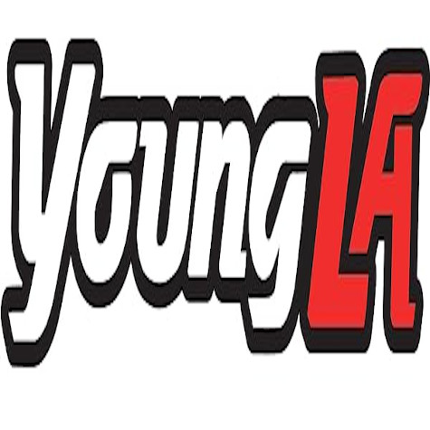

Comparación de fisioculturismo en diferentes épocas categoría CLASSIC
Culturismo actual de CLASSIC
 Nacimiento: 2/2/1995
Nacimiento: 2/2/1995
Chris Bumstead
Gran culturista actual, ganador de 5 Mr Olympia Classic, actualmente es socio de bastantes marcas y tiene un gran reconocimiento público.
Logros conseguidos:
5 Mr Olympias
Propio merchandising

Sponsor de Youngla
Sponsor de RAW
Culturismo anterior de CLASSIC
Nacimiento: 30/7/1947Arnold Schwarzenegger
De los primeros culturistas en participar en la categoría Classic. A parte de ser un gran culturista es un gran actor.
Logros conseguidos:
4 Mr Olympia
Actor de películas
Serie propia
Sponsor de Youngla